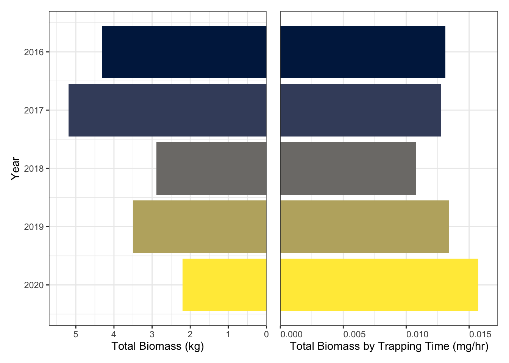

Total biomass is calculated as the sum of mosquito biomass collected in all traps across all NEON domains for each year (in kilograms). Total biomass by trapping time is that value (in milligrams) divided by the time spent trapping across all domains.
Note: “Other” genera include Mansonia, Orthopodomyia, Uranotaenia, and Wyeomyia.